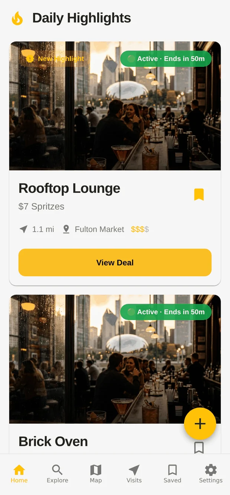
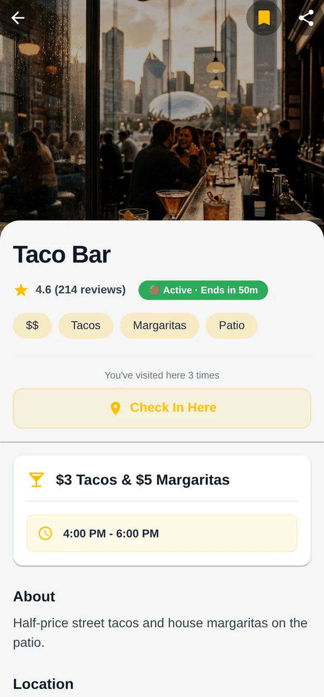

WORKING APP · iOS · ANDROID · WEB
Product + Engineering · Chicago
Happy Hour Finder
A cross-platform app for finding happy hours happening now, comparing deals, and picking a place to meet after work.
The map is the easy part. The hard part is the data: deals change, sources disagree, and one wrong listing makes people stop trusting the app. So I designed the whole system around that.
- n8n pipeline that discovers, re-checks, and scores deals nightly
- Publish gate: confidence ≥ 0.80, or it waits for a human
- Postgres with Row Level Security; 967 tests in CI